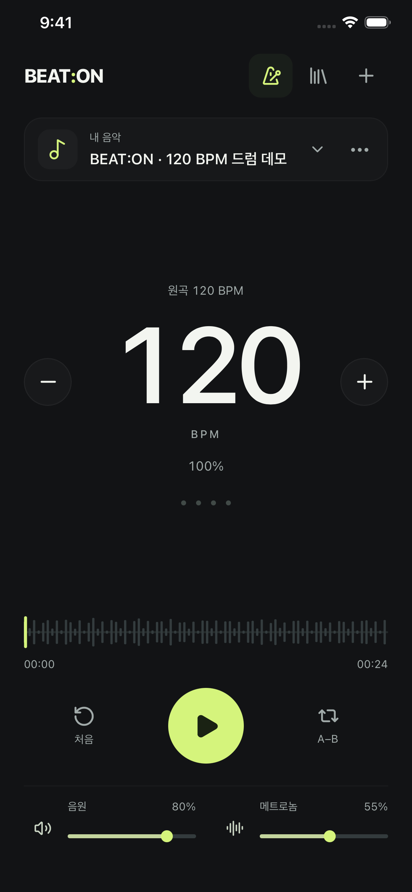

YOUR MUSIC. YOUR TEMPO.
좋아하는 곡,
나만의 템포.
빠르게 지나갔던 한 마디도, 이제 내 속도로.
음악을 불러오고 메트로놈과 함께 연습하세요.
비트온 살펴보기 앱스토어 출시 준비 중
음정 유지구간 반복기기 내 분석

MADE FOR PRACTICE
연습에 필요한 것만.
손이 가는 자리에.
속도와 박자를 맞추는 일은 간단하게.
집중은 온전히 연주에.
01음정은 유지하고,
음정은 유지하고,
속도는 편안하게.
BPM을 1씩 조절하거나 숫자를 좌우로 움직이세요. 익숙해진 만큼 속도를 올리며 원곡에 가까워집니다.
02음악 위에,
음악 위에,
선명한 박자.
4분음표와 8분음표, 기본 클릭과 날카로운 샤프 클릭. 음원과 메트로놈 볼륨도 각각 맞출 수 있습니다.
03어려운 한 구간을,
어려운 한 구간을,
내 것이 될 때까지.
A와 B로 시작과 끝을 정하고 반복하세요. 곡의 이름을 바꾸고 재생목록으로 모아, 다음 연습도 이어갈 수 있습니다.
PRESS PLAY. MAKE PROGRESS.
느리게 시작해도,
연주는 앞으로.
- 01 / 불러오기
오늘 연습할 곡.
내 파일에서 음원을 가져오세요.
다운로드 가능한 직접 음원 링크도 지원합니다. - 02 / 맞추기
편안한 템포.
기기에서 분석한 BPM을 확인하고,
내가 따라갈 수 있는 속도로 조절하세요. - 03 / 반복하기
한 번 더, 한 마디 더.
메트로놈을 켜고 A–B를 설정하면
원하는 구간에 집중할 수 있습니다.
ON YOUR DEVICE
음악도, 연습도.
내 기기 안에.
음원 분석과 템포 처리는 기기에서 실행됩니다. 가져온 곡과 연습 설정을 저장해 두면, 다음 연습은 더 빠르게 시작할 수 있습니다.
- 회원가입 없이 바로 사용
- 가져온 파일은 오프라인으로 분석·재생
- 음원을 분석 서버에 업로드하지 않음
BEAT:ON · 비트온